Radno vreme: pon–pet 09:00–16:30
Reglaža trapa u Nišu
Da vozilo ide ravno, a gume traju duže. Precizno podešavanje geometrije, gume, TPMS senzori i obrada kočionih diskova. Radimo od 2003. godine, za sva vozila.
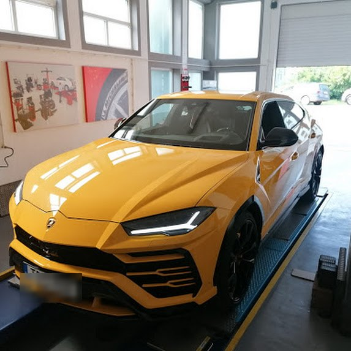
- Adresa
- Dimitrija Tucovića 155, Ledena stena, Niš
- Radno vreme
- Pon–pet 09:00–16:30, subota 09:00–14:30
- Telefon
- 063 693 726, 018 563 736
Usluge
Sve što trapu, točkovima i kočnicama treba, na jednom mestu i sa modernom opremom.
Zakažite termin-
Reglaža trapa
Merimo i podešavamo nagib, konvergenciju i zatur prednjih i zadnjih točkova. Vozilo drži pravac, volan stoji ravno, a gume se troše ravnomerno.
- Prednji i zadnji trap
- Putnička vozila i SUV
- Provera pre i posle
-
Servisiranje trapa
Zamena istrošenih delova trapa i ugradnja podesivih ramena, uz reglažu odmah nakon radova.
-
Vulkanizerske usluge
Zamena, montaža i balansiranje pneumatika na modernoj opremi, kao i ispravljanje felni.
-
TPMS senzori
Zamena i kodiranje senzora pritiska u gumama, da lampica na instrument tabli ostane ugašena.
-
Obrada kočionih diskova
Obrada i ravnanje kočionih diskova i doboša poboljšava kočenje i produžava vek kočionog sistema.
Šta reglaža zapravo podešava
Tri ugla određuju kako točak stoji na putu. Pomerite klizač i vidite šta se dešava kada odstupaju od zadate vrednosti.
- Nagib točka (camber)
- Koliko je točak nagnut ka unutra ili ka spolja kada se gleda spreda. Prevelik nagib troši jednu ivicu gume.
- Konvergencija (toe)
- Da li su točkovi, gledano odozgo, okrenuti ka unutra ili ka spolja. Direktno utiče na habanje gume i stabilnost pravca.
- Zatur (caster)
- Nagib osovine oko koje se točak okreće. Zaslužan je za stabilnost pri većim brzinama i vraćanje volana u ravan.
Kada treba doći na reglažu
- Vozilo vuče na jednu stranu.
- Volan nije ravan kada vozite pravo.
- Gume se troše neravnomerno, jedna ivica brže od druge.
- Posle udara u rupu, ivičnjak ili sudara.
- Posle zamene delova trapa, amortizera ili guma.
Nagib točka
Van tolerancije
Šematski prikaz, ugao je preuveličan. Stvarna tolerancija zavisi od modela vozila. Ovde je primer ±0,5° za nagib i ±0,15° za konvergenciju.
Iz naše radionice
Od porodičnih automobila do superautomobila, postupak je isti: merenje, podešavanje, provera.
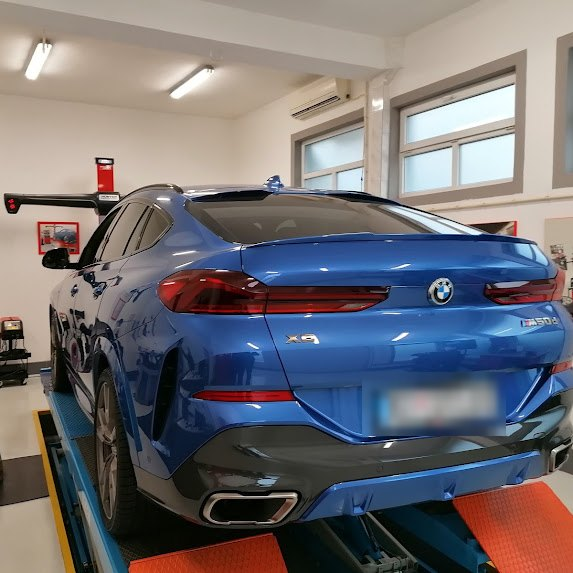
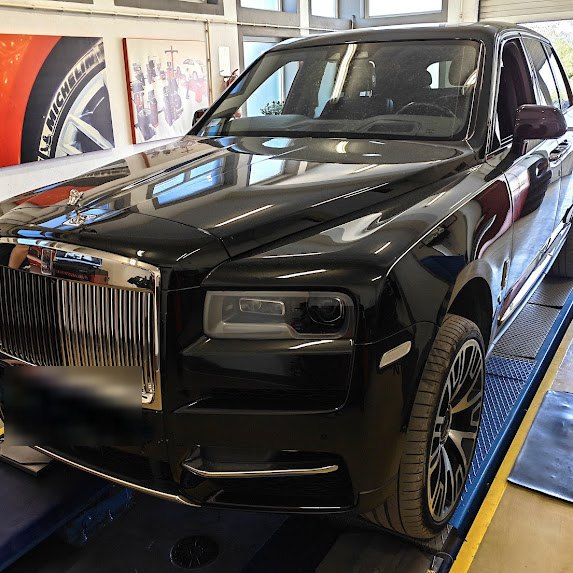
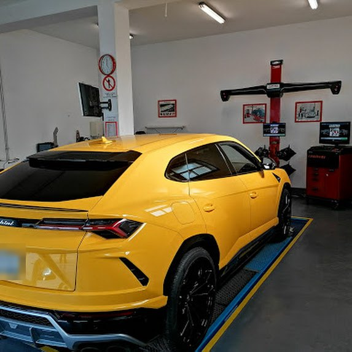
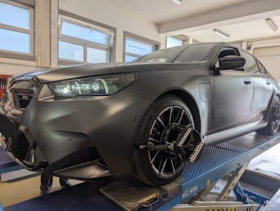
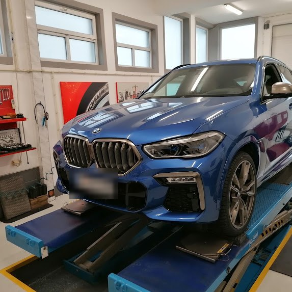
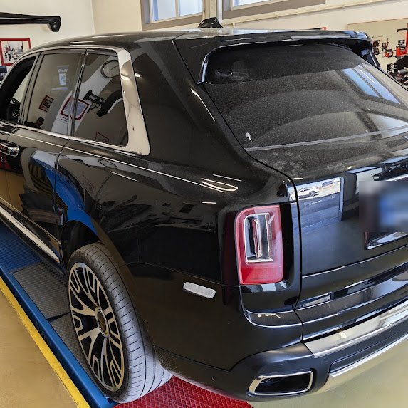
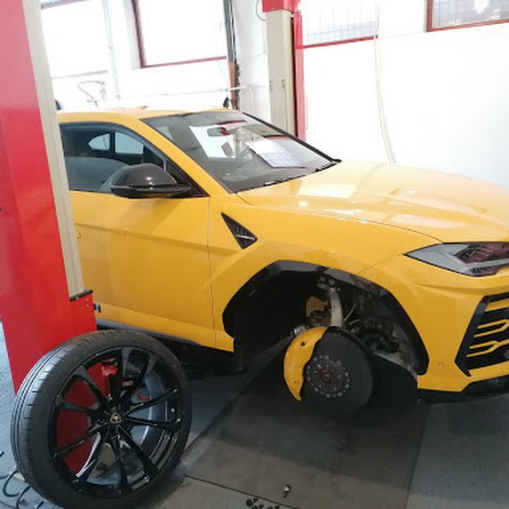
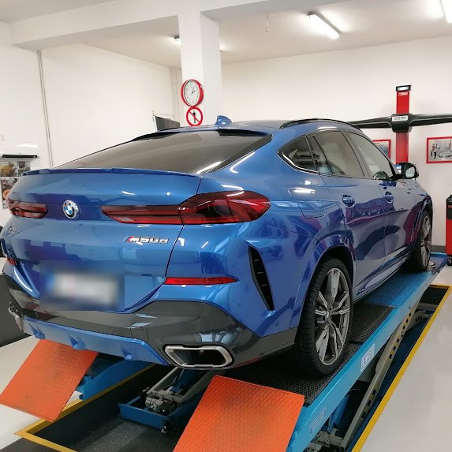
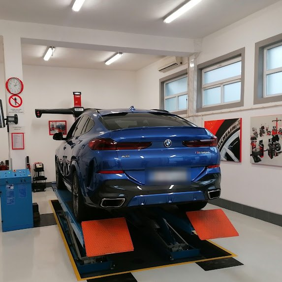
Honda CR-V: ugradnja HARDRACE zadnjih ramena
Na ovom CR-V-u ugradili smo podesiva zadnja ramena HARDRACE. Sa njima se geometrija zadnjeg trapa može podesiti tačno na zadatu vrednost, a zatim se kontrolno meri na uređaju za reglažu.
-
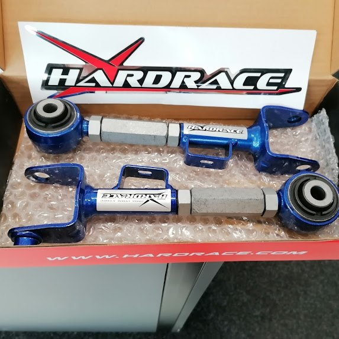
Podesiva ramena, spremna za ugradnju
-
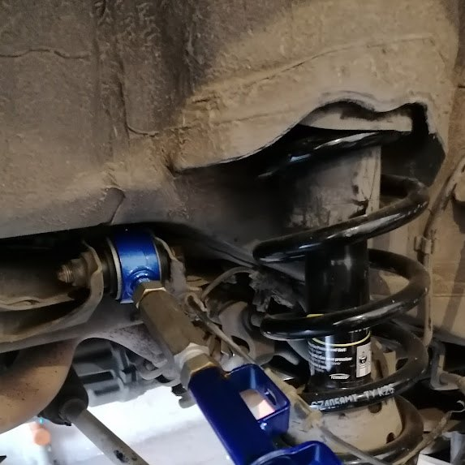
Ugradnja uz oprugu i amortizer
-
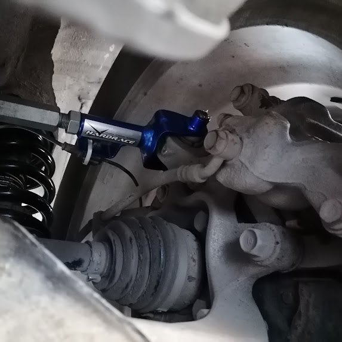
Rame montirano uz nosač točka
-
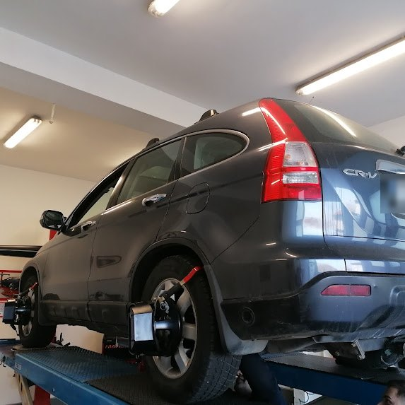
Merenje geometrije posle ugradnje
Zašto se klijenti vraćaju
Brzo
Klijenti nam najčešće pohvale brzinu. Dolazite, ostavljate vozilo i ne čekate nepotrebno.
Uredno
Radionica je svetla i čista, a vozila se prihvataju pažljivo, od gradskih automobila do najskupljih SUV modela.
Tačno
Merimo, podešavamo i ponovo proveravamo. Razlika se oseti čim izađete na put.
Radimo od 2003. godine. Za svaku uslugu izdajemo račun. Pročitajte iskustva klijenata na Google mapama
Kontakt i lokacija
Nazovite ili svratite. Radionica radi radnim danima od 09:00, a subotom do 14:30.
Dimitrija Tucovića 15518000 Niš, Ledena stena
Gradski prevoz: stanica Ledena stena, linije 1, 10, 33, 36 i 36L. Pre polaska proverite kućni broj, mi smo na broju 155.
Radno vreme
| Ponedeljak | 09:00–16:30 |
|---|---|
| Utorak | 09:00–16:30 |
| Sreda | 09:00–16:30 |
| Četvrtak | 09:00–16:30 |
| Petak | 09:00–16:30 |
| Subota | 09:00–14:30 |
| Nedelja | Zatvoreno |
Česta pitanja
Kako da zakažem termin?
Najbrže telefonom: 063 693 726 ili 018 563 736. Možete i da svratite u toku radnog vremena.
Koliko često treba raditi reglažu trapa?
Kao opšta preporuka jednom godišnje. Obavezno nakon udara u rupu ili ivičnjak, zamene delova trapa ili amortizera, i čim primetite da vozilo vuče ili da se gume troše neravnomerno.
Gume mi se neravnomerno troše. Da li je uzrok geometrija?
Pogrešna geometrija je čest uzrok, ali ne i jedini. Na habanje utiču i pritisak u gumama i istrošeni delovi trapa, pa se i oni proveravaju.
Zašto svetli lampica TPMS posle zamene guma?
Senzori pritiska moraju biti ispravni i kodirani za vaše vozilo. Ako je senzor zamenjen ili nije prepoznat, lampica ostaje upaljena. Zamenu i kodiranje radimo kod nas.
Kočnice vibriraju pri kočenju. Šta da radim?
Vibracije često potiču od neravnih kočionih diskova. Obrada i ravnanje diskova može da ih ukloni, ako disk nije previše istanjen. Najbolje je da ga pogledamo.
Da li radite i na skupocenim i sportskim vozilima?
Da. Radimo na putničkim vozilima i SUV-ovima svih klasa, od gradskih automobila do superautomobila. Primere vidite u odeljku Iz naše radionice.